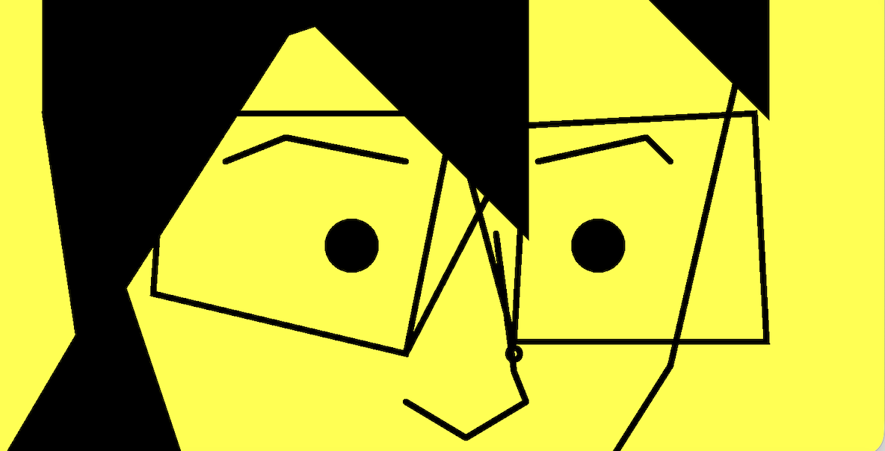
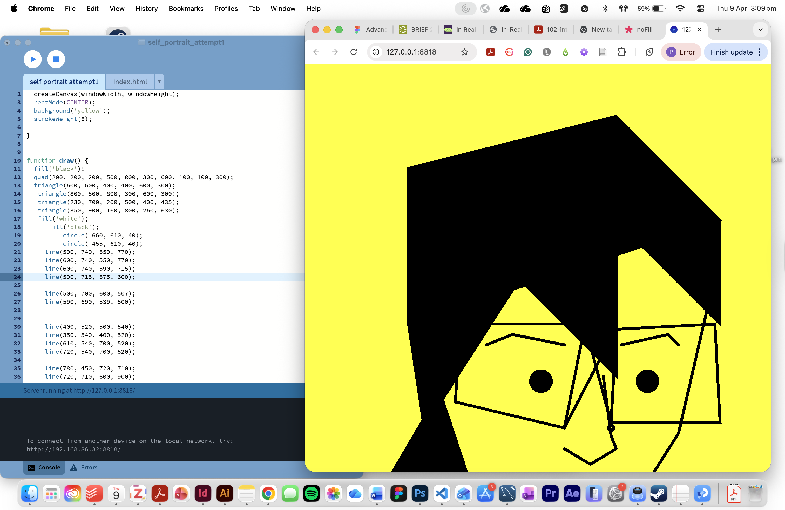
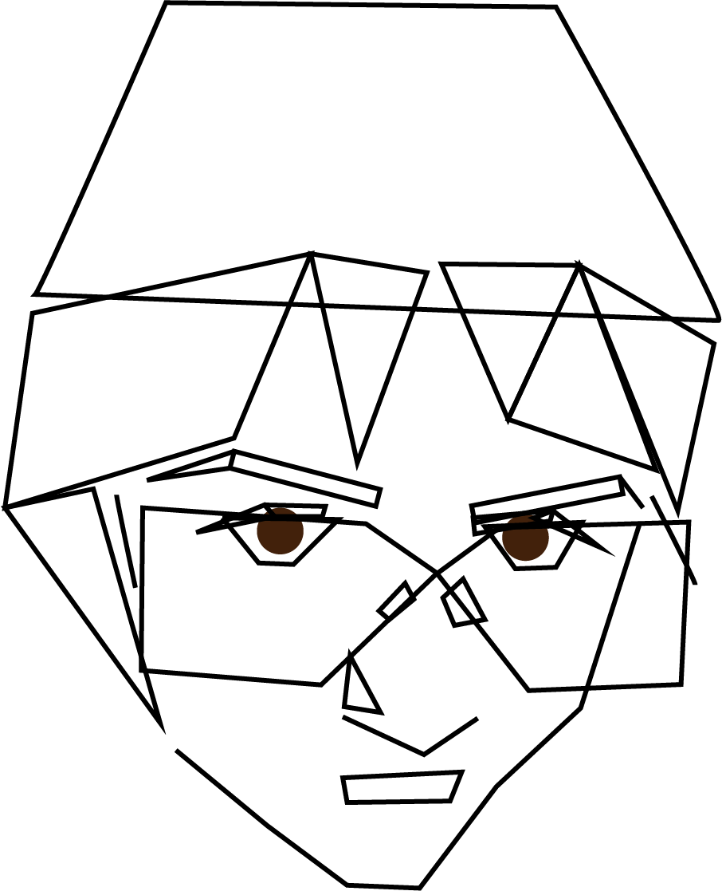

back
As a step up from the fun, wild and abstract Js creations from Week 4, Creating a portrait was a interesting challenge that made me realise how much I didn't know about Js5 coding, and figure out alot more ways to use it.
I started this project thinking that I would make an angular portrait of myself using Js5 lines - which I definately underestimated how complex it is to simply match up & align lines on the canvas plane. Js5 is very particular, it took me a bit to figure out how the dimensions of the canvas relate to each shape's placement. Addtionally, each shape (polygons especially) were tricky to figure out due to the amount of points needed to complete the shape.
I'm interested in exploring ways that I could expand this portrait, either by giving it another attempt to fix issues (especially the cropping of the canvas?) or by playing with the loop function more to make it dynamically generated.

My original plan - not achieved in the way I intended, but provided some reference on how I got to my portrait outcome.
